小說

.jpg)

- 1956年《清道夫的孩子》為首次發表的小說
- 1969年《兒子的大玩偶》仙人掌； 大林 1977年； 水牛 1987年
- 1971年《兩個油漆匠》遠景出版社
- 1974年《鑼》遠景出版社
- 1974年《莎喲娜啦．再見》遠景出版社
- 1975年《小寡婦》遠景
- 1979年《我愛瑪莉》遠景
- 1985年《青番公的故事》（黃春明小說集）皇冠出版社
- 1985年《鑼》（黃春明小說集）皇冠出版社
- 1985年《莎喲娜啦再見》（黃春明小說集）皇冠出版社
- 1989年《兩個油漆匠》（黃春明電影小說集）皇冠出版社
- 1999年《放生》（黃春明小說集）聯合文學 ，新版（黃春明作品集4）聯合文學 2009年
- 2000年《看海的日子》（黃春明典藏作品集）皇冠出版社 ，新版（黃春明作品集1）聯合文學 2009年
- 2000年《兒子的大玩偶》（黃春明典藏作品集）皇冠出版社 ，新版（黃春明作品集2）聯合文學 2009年
- 2000年《莎喲娜啦．再見》（黃春明典藏作品集）皇冠出版社 ，新版（黃春明作品集3）聯合文學 2009年
- 2005年《黃春明--銀鬚上的春天》遠流出版社
- 2009年《沒有時刻的月臺》（黃春明作品集5）聯合文學
散文
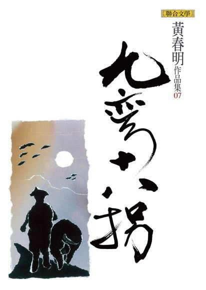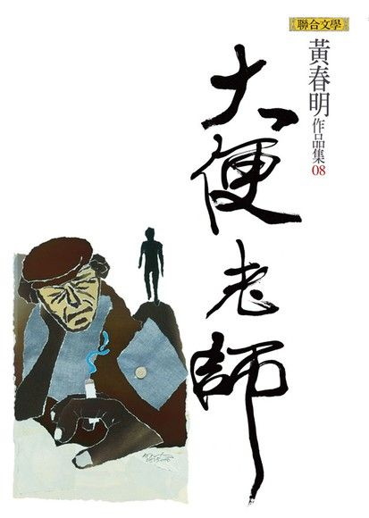.jpg)
- 《鄉土組曲》（台灣民謠記事）遠流出版社 1976年
- 《等待一朵花的名字》皇冠出版社 1989年，新版（黃春明作品集6）聯合文學 2009年
- 《九彎十八拐》（黃春明作品集7）聯合文學 2009年
- 《大便老師》（黃春明作品集8）聯合文學 2009年
兒童文學
.jpg) 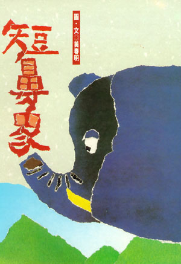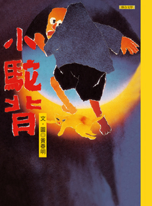
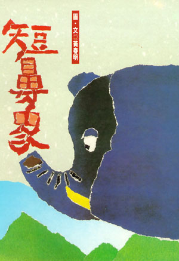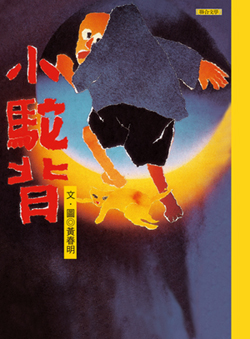.jpg)
.jpg)
- 1993年《毛毛有話》皇冠出版社 ，新版（黃春明作品集9）聯合文學 2010年
- 1993年《我是貓也》（撕畫童話）皇冠出版社 ，新版（黃春明童話集）聯合文學 2011年
- 1993年《短鼻象》（撕畫童話）皇冠出版社 ，新版（黃春明童話集）聯合文學 2011年
- 1993年《小駝背》（撕畫童話）皇冠出版社，新版（黃春明童話集）聯合文學 2011年
- 1993年《愛吃糖的皇帝》（撕畫童話）皇冠出版社 ，新版（黃春明童話集）聯合文學 2011年
- 1993年《小麻雀．稻草人》（撕畫童話）皇冠出版社 ，新版（黃春明童話集）聯合文學 2011年
繪本
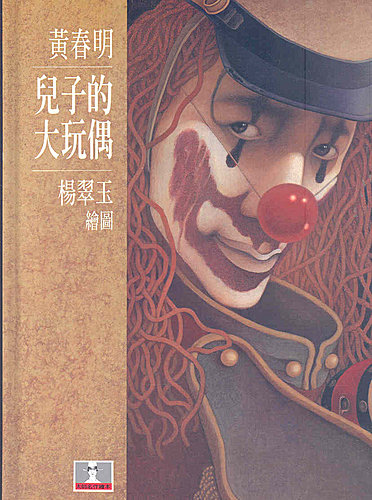
- 1995年《兒子的大玩偶》繪本 楊翠玉繪圖 格林文化
兒童劇
 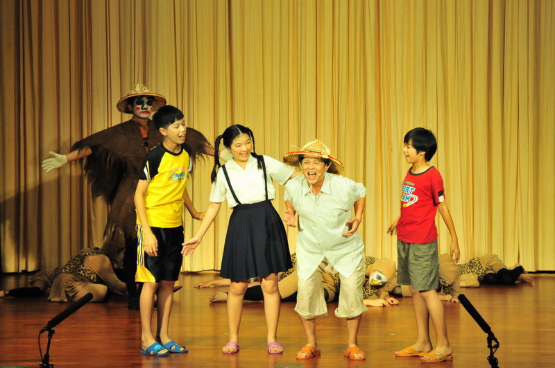
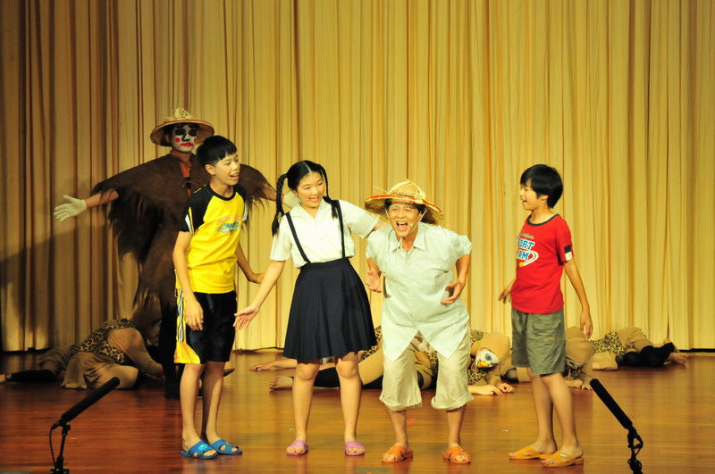
- 1993年 編導《稻草人和小麻雀》兒童舞台劇，鞋子兒童實驗劇團演出
- 1993年 發表《小李子不是大騙子》兒童劇劇本
- 1995年 編導《掛鈴噹》兒童舞台劇，黃大魚兒童劇團演出
- 1995年 編導《小李子不是大騙子》大型兒童歌舞劇，鞋子兒童實驗劇團演出
- 1999年 發表《愛吃糖的皇帝》兒童劇劇本
- 1999年 編導《愛吃糖的皇帝》兒童舞台劇，黃大魚兒童劇團演出
- 2002年 指導《我不要當國王了》兒童舞台劇，復興國中少年劇團演出
- 2003年 指導《稻草人與小麻雀》兒童舞台劇（閩南語版），復興國中少年劇團演出
- 2003年 發表《外科整型》劇本
- 2004年《外科整型》大型現代人偶劇，與日本HITOMIZA人形劇團技術合作，黃大魚兒童劇團演出
- 2004年 編導《戰士乾杯》舞台劇（讀劇版），黃大魚兒童劇團演出
- 2005年 編導《小駝背》兒童劇，黃大魚兒童劇團演出
歌仔戲
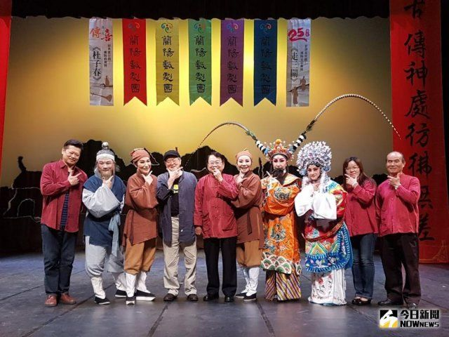
- 2001年 發表《杜子春》首部歌仔戲劇本
- 2002年 編導《杜子春》歌仔戲，蘭陽戲劇團演出
- 2002年 改編《愛吃糖的皇帝》兒童劇的歌仔戲劇本
- 2003年 編導《愛吃糖的皇帝》歌仔戲，蘭陽戲劇團演出
- 2003年 編導《新白蛇傳I—恩情、愛情》蘭陽戲劇團演出
- 2005年 編導《新白蛇傳II—人情、世情》，蘭陽戲劇團演出
論著
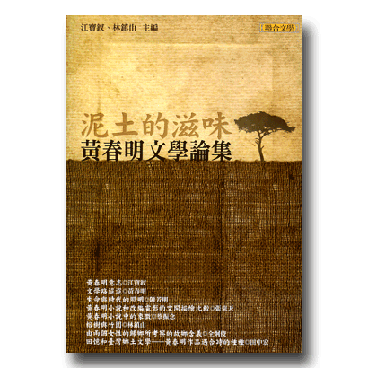
- 《本土語言篇實驗教材教學手冊：宜蘭縣國民小學鄉土教材》
- 《本土語言篇實驗教材教學手冊：宜蘭縣國民中學鄉土教材》
- 《本土語言（河洛語系）注音符號簡介》
- 《水稻文化活動－共享豐收喜悅》
- 《粒粒皆辛苦－台灣舊農業的背影》